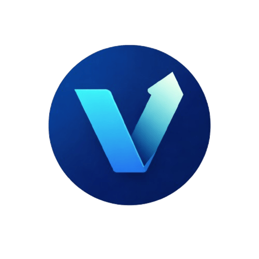

Privacy by Default
Core logic stays on-device first. Data export and sync are opt-in, explicit, and user-controlled.

Viscon StudiosDeveloper Website
I’m Aakash Sai Raj. I design and build mobile products through Viscon Studios, focused on privacy-first architecture, practical AI, and high-signal UX.
Selected Project
Rupiq is an offline-first Android and iOS app that helps users track spending, detect risk patterns, and make stronger financial decisions without sending sensitive data to external servers.
Rupiq is currently in alpha testing (invite-only). Public launch is planned for the first week of May 2026.
Engineering Approach
Core logic stays on-device first. Data export and sync are opt-in, explicit, and user-controlled.
Start with deterministic rule engines, then introduce AI only when it improves outcomes without exposing raw user data.
Ship MVPs early, test in real usage, and iterate with measurable improvements in reliability and clarity.
Delivery Roadmap
Let’s Build